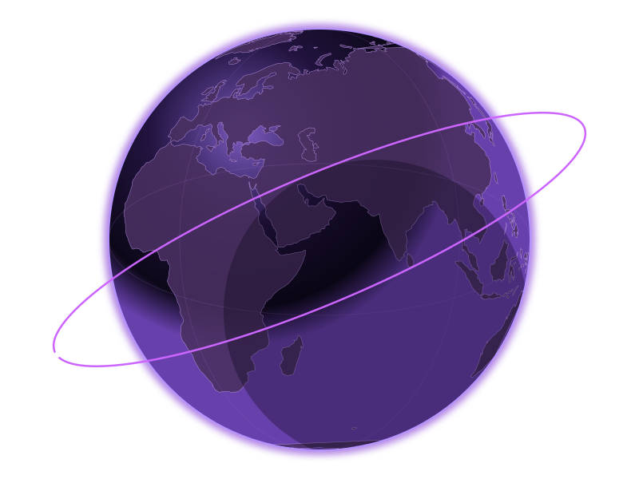

Module 3 · Actual WebGL material study
Earth. In continuous motion.
72-second revolution · 23.4° axial tilt · independent 28/42-second orbits · geographic land texture.

Loading the Earth material study…
72-second revolution · 23.4° axial tilt · independent 28/42-second orbits · geographic land texture.

Loading the Earth material study…